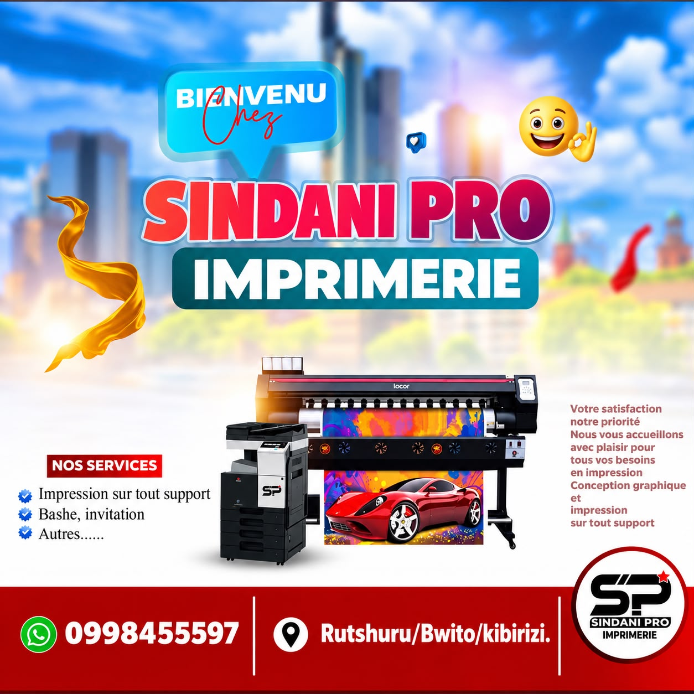
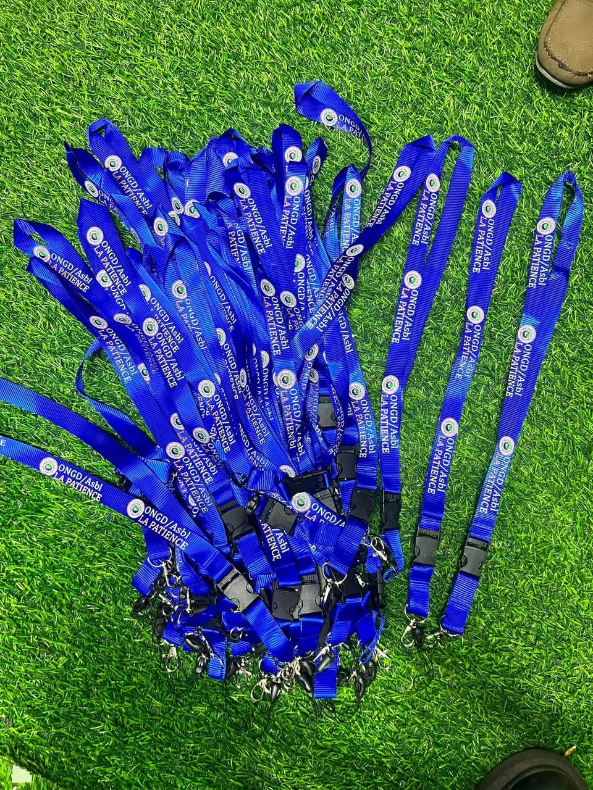
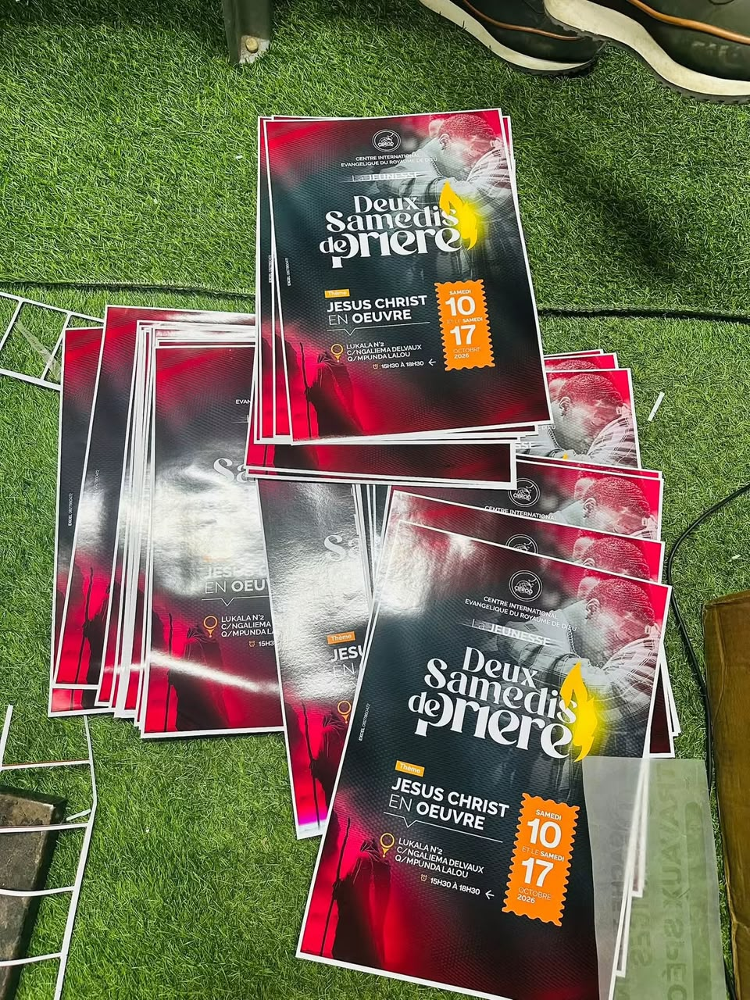
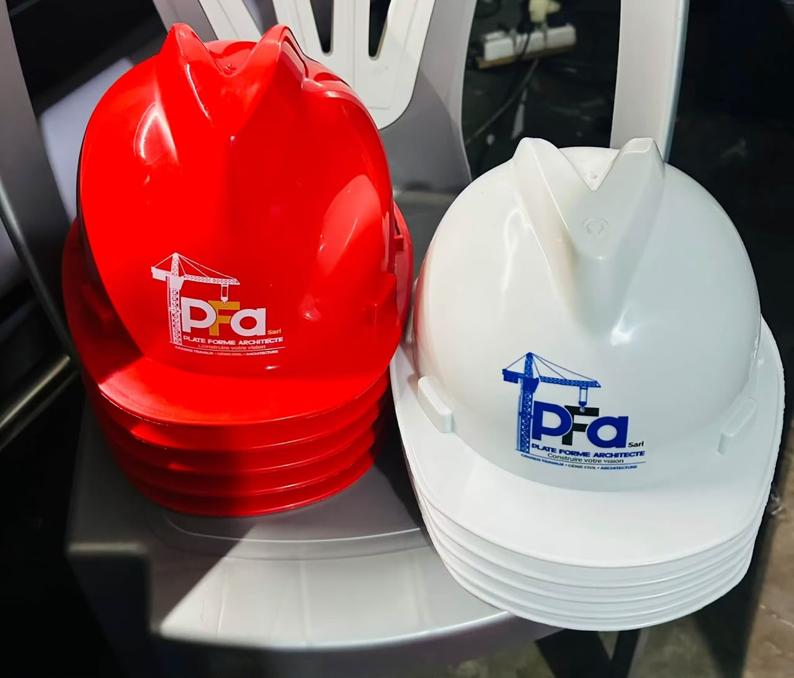
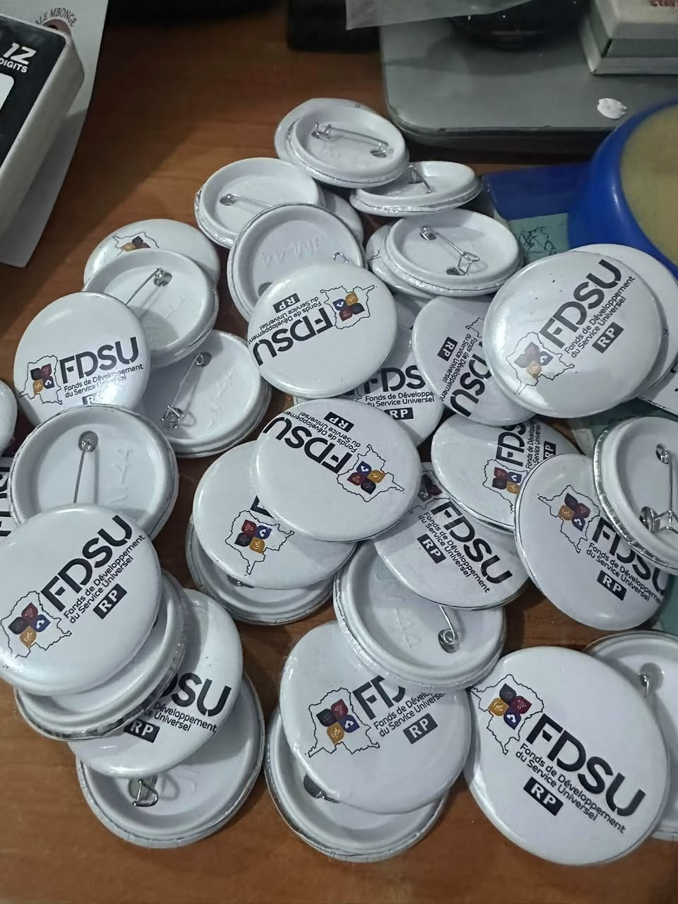
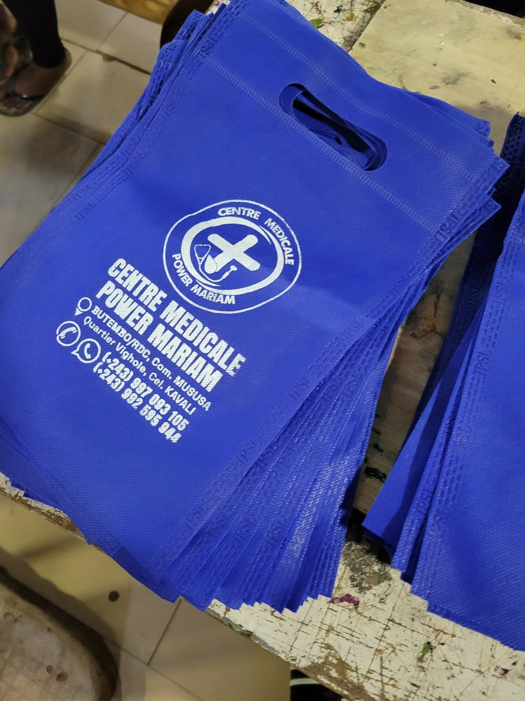
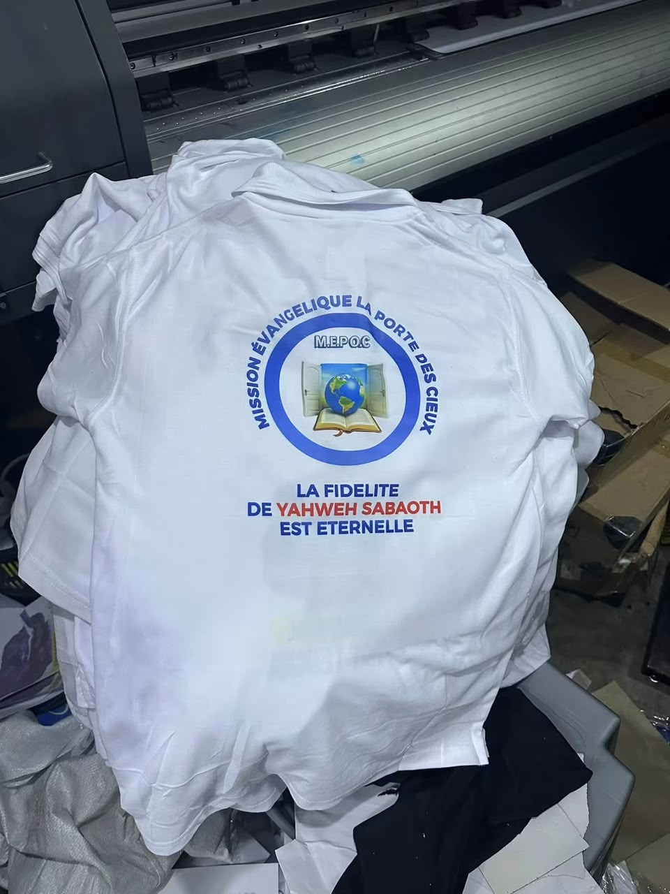
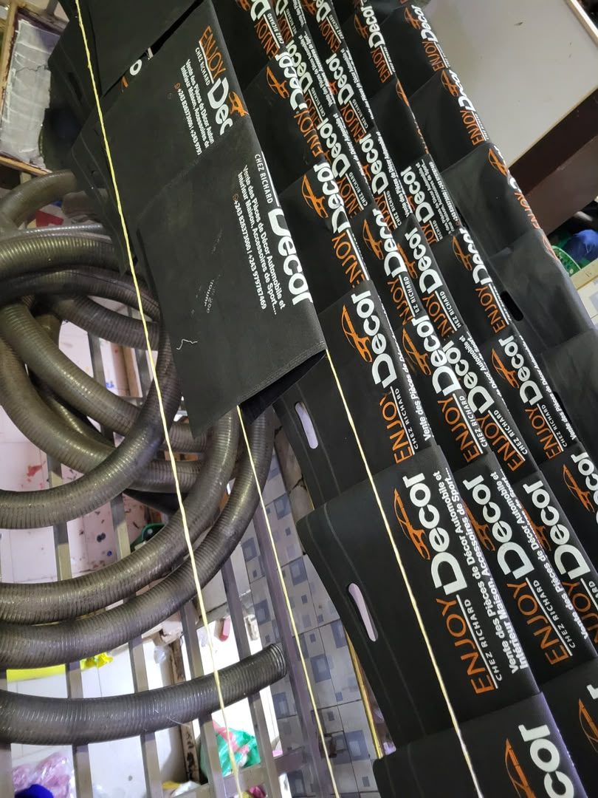
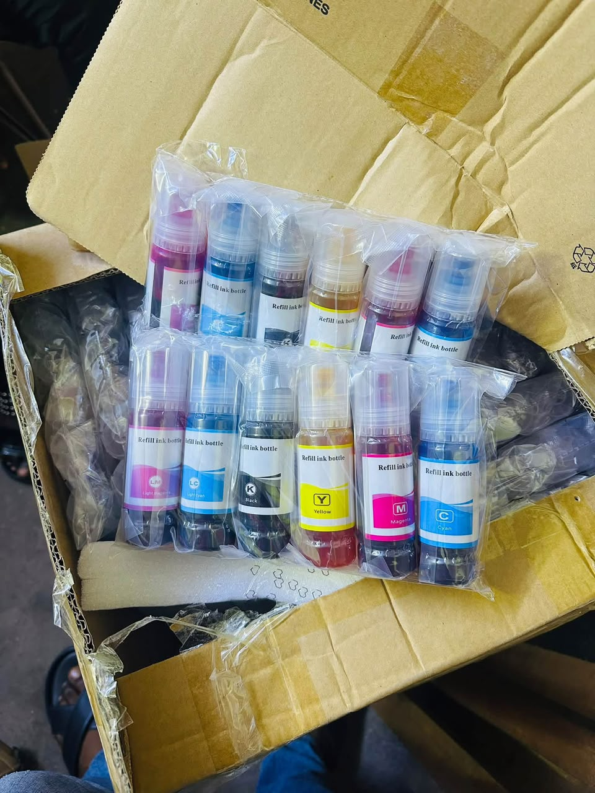
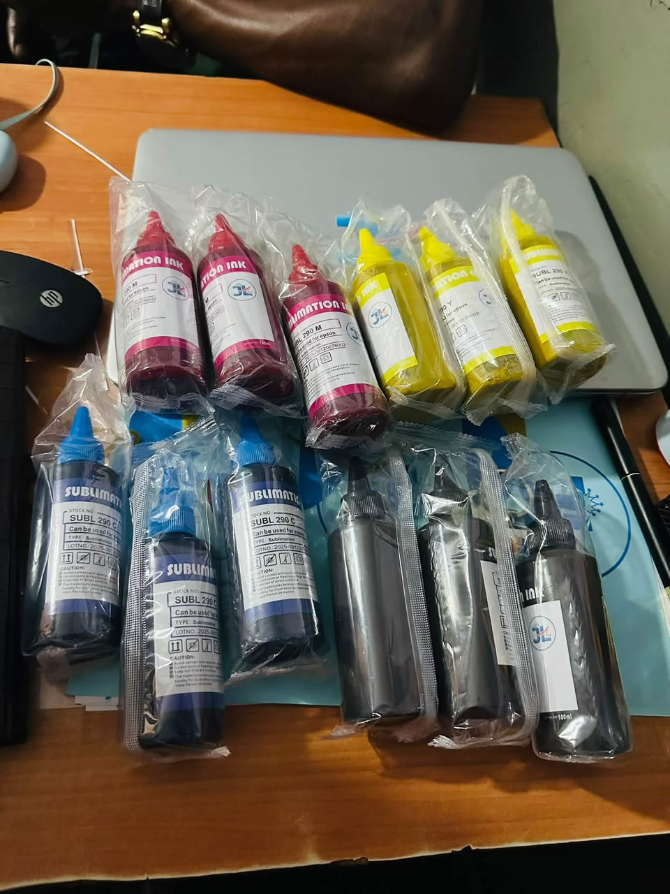

LE TRAVAIL EN IMAGES
La qualité se voit.
Découvrez nos réalisations.
Textiles, affiches, accessoires et coulisses de l’atelier. Cliquez sur une image pour la voir en grand.

Bienvenue chez Sindani Pro

Cordons personnalisés

Affiches événementielles

Casques personnalisés

Badges à épingle

Sacs bleus personnalisés

T-shirts imprimés

Sacs publicitaires

Encres pour l’impression
